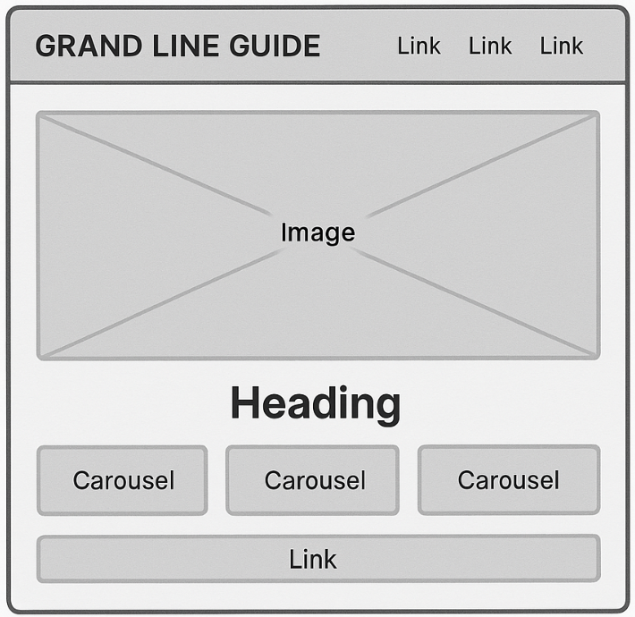

Grand Line Guide
This site name reflects the spirit of adventure in the anime *One Piece*, where the Grand Line is the legendary sea route full of mystery, danger, and dreams. It appeals to fans and newcomers alike, providing a navigational guide through the One Piece universe.
Optional domain availability: grandlineguide.net
The purpose of the Grand Line Guide is to introduce and educate users about the world of One Piece. It provides character bios, information about Devil Fruits, famous story arcs, and an interactive form for fans to share their pirate dreams. It's designed for both new viewers and longtime fans who want to explore or revisit key parts of the story.
Two primary colors were selected to create a fun and adventurous anime vibe:
Mobile View:
Desktop View:
(Note: Wireframes are placeholder sketches for now. Final layout may vary.)